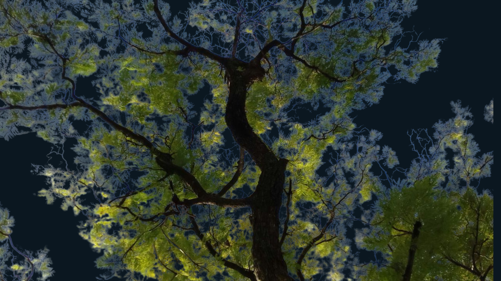

Hi, I’m Liz

I’m a passionate and versatile Computer Programming and Analysis graduate (April 2025), currently based in Canada, where I moved from Peru seeking a safer, more inclusive environment to grow both personally and professionally. I have lived with my partner for over fifteen years and our two adorable dogs, who remind me daily of the importance of care, empathy, and perseverance.
Since childhood, I’ve been deeply connected to art, nature, and storytelling. I used to paint miniatures and create visual art, and today I nurture my love for plants and animals in everyday life. These lifelong passions shaped the way I approach technology—with creativity, empathy, and purpose.
I come from a Quechua family from the Peruvian Andes—descendants of the Inca civilization and part of one of the living Indigenous nations of South America. My heritage shapes my commitment to community, land, and inclusive technology.
Skills, Experience & Creative Work

Throughout my studies, I’ve built experience in full stack development, UX/UI design, and agile teamwork. I collaborated with Mysterious Package Company on practical projects that strengthened my technical and problem-solving skills.
Additionally, I have worked as a Customer Service Data Analyst at Iron Mountain, supporting data-driven decision-making and improving user experience through optimized reporting and service analysis.
I currently produce and edit videos for a YouTube channel in Spanish that narrates Girl Love (GL) stories. As a proud member of the 2SLGBTQI+ community, this is more than a creative outlet—it's a platform to amplify voices and share emotionally resonant stories. I manage video editing, branding, and community engagement.
Even before formal education, I explored and taught myself skills in branding, social media management, and content creation. I'm fluent in Spanish and hold a 7.0 IELTS English level, which allows me to thrive in bilingual and multicultural teams.
What Drives Me
My mission is to build technology that is inclusive, ethical, and meaningful. I’m particularly drawn to projects where tech meets community impact, whether through interactive apps, social platforms, or storytelling tools.
I’m eager to join teams working in areas such as visual design, creative development, branding, or software for social good. I aim to contribute to digital platforms that promote social justice by elevating the voices of historically oppressed communities, including LGBTQ+ people and others impacted by racism and structural inequality.
My work is rooted in empathy, curiosity, and a strong belief in the power of collaboration and representation. I create with purpose—and always with heart.